📖 翻譯全文 🎤 演講講稿（重點＋逐字稿）
小提琴技巧基礎
Basics
左手技巧 ‧ 完整繁體中文翻譯
原著 Simon Fischer（賽門‧費雪）
翻譯說明： 本文件忠實翻譯原書「左手」章節的所有文字內容 （含標題、導言、步驟、註腳、圖說與譜例標示）。原書中的五線譜譜例與照片 為圖像，無法以文字重現，故以
［譜例］ /
［圖片］
方塊標示其位置，並完整翻譯其中的文字標記（曲目來源、速度、力度、指法說明等），以便對照原書使用。重要小提琴術語在首次出現時以括號保留英文原文。
為三度音程擺放手型POSITIONING THE HAND FOR THIRDS · Ex. 143
演奏三度音程（thirds）時，手型要比平常更倚重第三指與第四指，讓較低的手指（第一、二指）往後伸。如果手型是建立在第一指與第二指上，上方的手指（第三、四指）會比較難搆到音，手也容易變得緊繃（圖 41）。
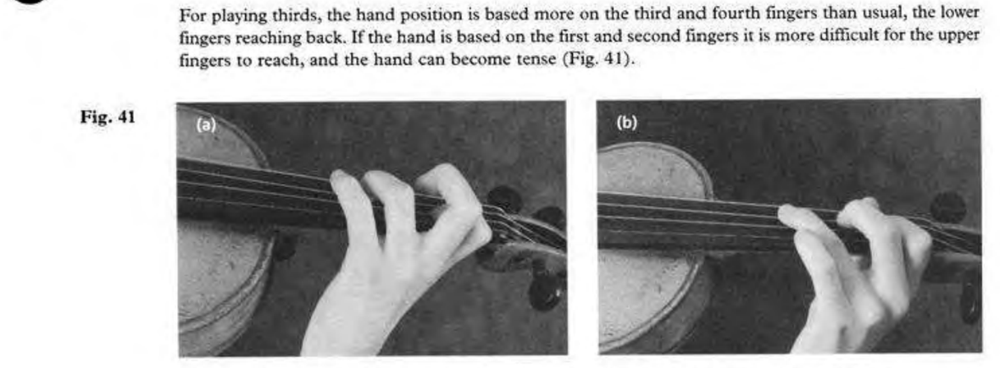
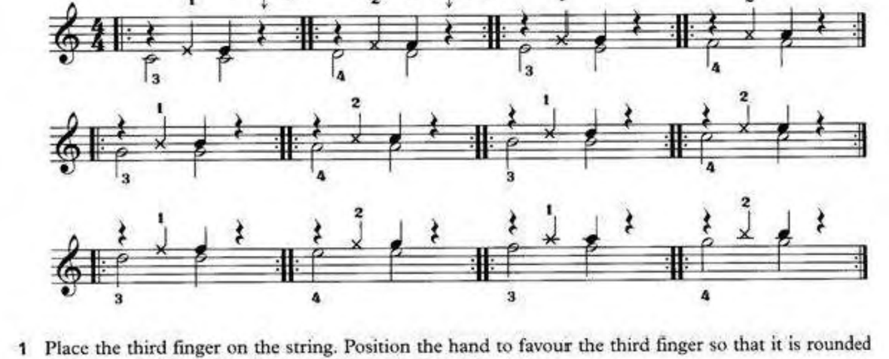
原書第 102 頁 · 實際譜例／圖示 圖片 Fig. 41 ：兩張左手按弦照片： (a) 以第三指為基礎的手型 （Hand position based on the third finger） (b) 以第一指為基礎的手型 （Hand position based on the first finger）譜例 ：練習譜（高音譜號，4/4 拍），標示： 移開第一指（Remove first finger） 、 移開第二指（Remove second finger） ，並標有指法 1、2、3、4 與雙音（double stop）按法。
這個練習除了是極佳的三度音程練習之外，也有助於找到整體上更為平衡的手型。請放慢演奏，不必拘泥於任何特定的拍子律動。
把第三指放到弦上。調整手型以順應第三指，使它保持圓弧而放鬆，不必為了搆到音而往上伸展。
在演奏第三指的同時，不改變第三指的形狀 ，無聲地放下第一指（記譜為 ×音符）——奏出雙音——再把第一指移開，讓第三指仍以圓弧形狀留在弦上。
把第四指放到弦上，然後移開第三指。調整手型以順應第四指，使指尖落在弦上，且手指保持圓弧而放鬆。
不改變第四指的形狀 ，用第二指往後搆——奏出雙音——再把第二指移開，讓第四指仍以圓弧形狀留在弦上。換把（shift）上行到新的第三指，並以相同方式繼續。
原書 102 Left Hand
有指八度Fingered octaves
以完全相同的方式練習有指八度（fingered octaves）——這是一項關鍵的練習技巧。1
手較小或中等大小的人也許無法讓第四指保持圓弧，但仍要盡可能保持圓弧。
保持拇指根部與第一指之間的空間張開。（參見圖 32。）就練習而言，把拇指放得相當靠前，置於兩指之間的中點。
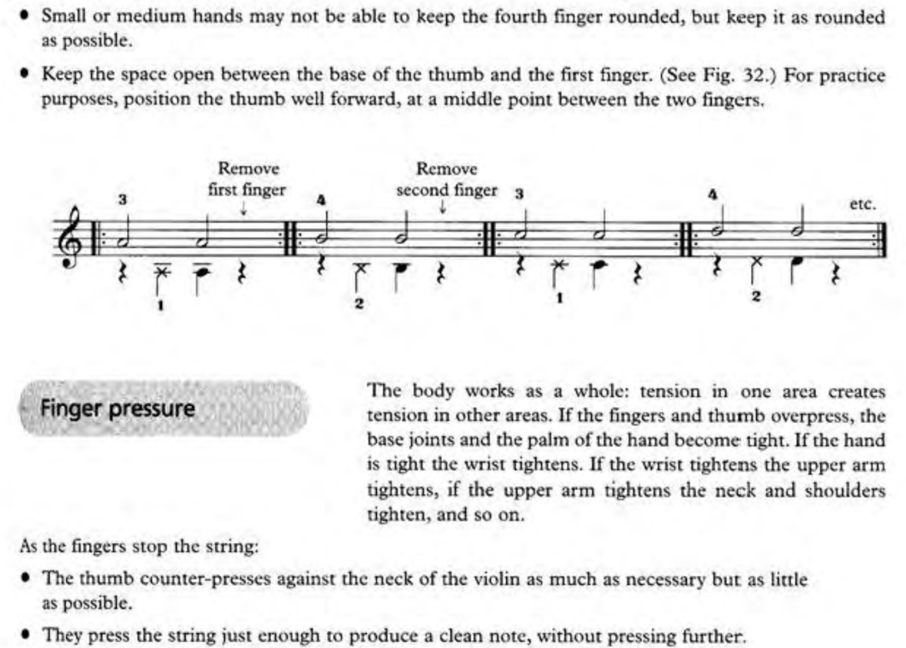
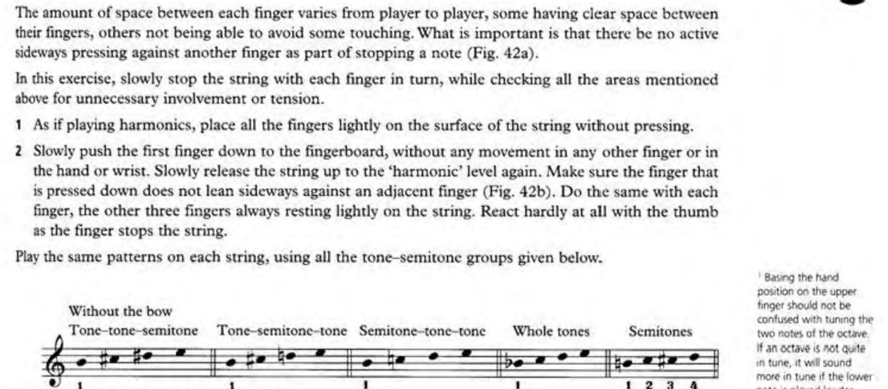
原書第 103 頁 · 實際譜例／圖示 譜例 ：有指八度練習譜，標示 移開第一指 、 移開第二指 ，指法 3、4，並標 etc.（依此類推）。譜例 ：不用弓（Without the bow） 。各組標示：全音—全音—半音、全音—半音—全音、半音—全音—全音、全全音、半音群（指法 1 2 3 4）。 說明文字： 每一小節內的所有手指要一起放到弦上 。
手指壓力FINGER PRESSURE
身體是作為一個整體在運作的：某一處的緊張會在其他部位製造緊張。如果手指與拇指過度按壓，手指根部關節（base joints）與手掌就會變緊。手一緊，手腕就跟著緊；手腕一緊，上臂就緊；上臂一緊，脖子與肩膀也跟著緊，如此連鎖。
當手指按弦時：
拇指對著琴頸（neck）做反向支撐——必要時用力，但盡可能少用力。
手指對弦的按壓，只要剛好足以發出乾淨的音即可，不再多按。
手指根部關節保持放鬆。
弦上方（尚未按弦）的手指保持放鬆。
各指之間不互相往側面擠壓。
手腕保持放鬆。
上臂不過度往右拉進。
小提琴不被肩膀與下巴夾得太緊。
手指的獨立性Finger independence · Ex. 144
各指之間的空間因人而異，有些人手指之間有明顯空隙，有些人則無法避免某些手指互相接觸。重要的是：在按弦發音時，不能有任何主動地往側面去推擠另一根手指的動作（圖 42a）。
在這個練習中，依序用每一根手指緩慢地按弦，同時檢查上述各部位是否有不必要的用力或緊張。
如同演奏泛音（harmonics）一般，把所有手指輕輕放在弦的表面上，不施加壓力。
把第一指緩慢地往指板按下，過程中其他手指、手或手腕都不要有任何移動。再緩慢地把弦放鬆回到「泛音」的高度。確認按下去的那根手指不會往側面倚靠到相鄰的手指（圖 42b）。每一根手指都這樣做，其餘三指始終輕放在弦上。手指按弦時，拇指幾乎完全不要有任何反應。
在每一條弦上演奏相同的模式，並使用下方所列的各種「全音—半音」組合。
原書 103 Left Hand
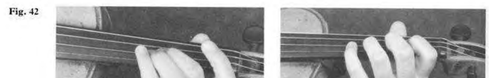
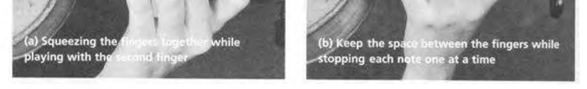
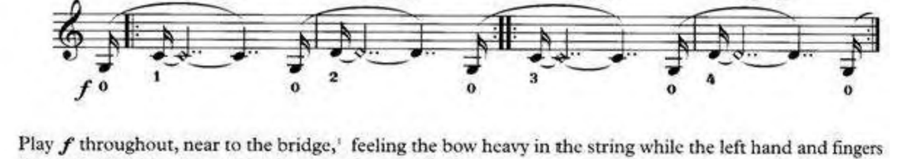
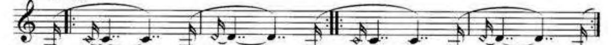
原書第 104 頁 · 實際譜例／圖示 圖片 Fig. 42 ：(a) 用第二指演奏時，手指互相擠在一起 （錯誤示範：Squeezing the fingers together while playing with the second finger） (b) 逐音按弦時，保持手指之間的空間 （Keep the space between the fingers while stopping each note one at a time）譜例 ：♩=50，四處皆標 緩慢變換（Slowly change） ，力度 f，指法 0、1、2、3、4。譜例 ：♩=50，力度 f，指法 0、1、2、3、4（泛音與實音交替）。
最小壓力Minimum pressure
正確的手指壓力在指板上各處都是一樣的：必要時用力，但盡可能少用力 。這是左手技巧中最重要的單一面向之一。當手指輕盈、並對弦的彈性形變保持敏感時，手會獲得極大的輕鬆感。左手感受弦的回彈，右手則感受弓、弓毛與弦的回彈。
如果演奏者腦中的心像是「放下手指＝把弦壓到指板上」，手就會變得緊繃。弦也許會碰到指板（尤其在低把位），也許不會；但主要的感覺應該始終是在弦的「彈性（bounciness）」上演奏，手指只把弦「壓彎」到剛好能讓音正常發響的程度。
練習 1Exercise 1 · Ex. 145
快速而輕巧地放下手指，然後立刻把弦放鬆回到泛音。
「緩慢變換（Slowly change）」是指非常緩慢地把手指按下，從泛音變換到實音（stopped note）。換句話說，在演奏泛音的同時，逐漸把手指往下壓，去感受按穩這個音所需的正確壓力。一開始泛音會「破掉（break）」，此時泛音與實音都無法正常發響。接著再多一點點壓力，就能乾淨地按出實音。按到這裡就好，不要再多按。
全程奏 f，靠近琴橋（near to the bridge）1 ，感受弓沉在弦裡，同時左手與手指感覺輕盈。無論你多快放鬆回到泛音，都要把十六分音符（semiquavers）奏得清楚。
在空弦時，以及在把弦放鬆到泛音時，要徹底放鬆手指根部關節與拇指。當手指再次回到弦上按音時，要保持那份放鬆。
也在其他弦上演奏，使用對應的泛音。
替代練習Alternative
快速而輕巧地放下手指以奏出泛音。然後立刻把弦按到剛好足以奏出實音的程度，去感受所需的確切壓力。演奏實音時，手與手指要和演奏泛音時一樣放鬆。
也在其他弦上演奏，使用對應的泛音。
原書 104 Left Hand
練習 2Exercise 2 · Ex. 146
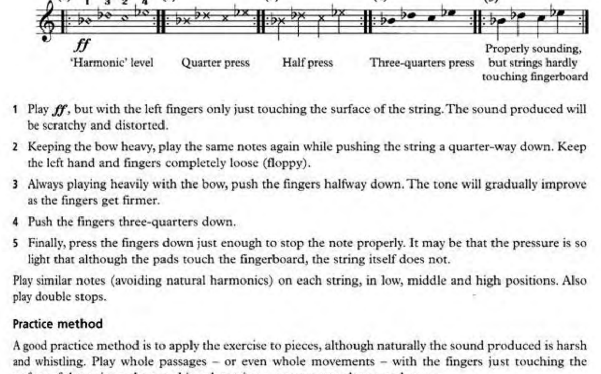
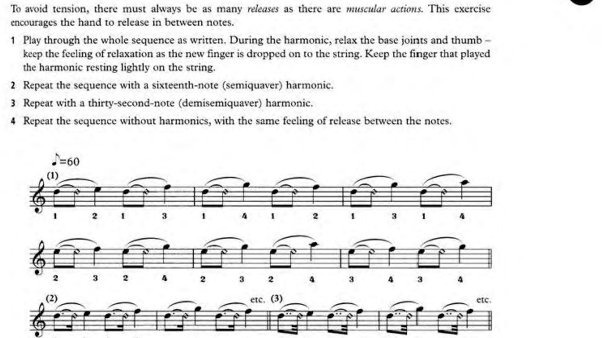
原書第 105 頁 · 實際譜例／圖示 譜例 ：力度 ff。五個階段標示：(1) 「泛音」高度 （Harmonic level）、(2) 按四分之一 （Quarter press）、(3) 按一半 （Half press）、(4) 按四分之三 （Three-quarters press）、(5) 正常發響，但弦幾乎沒碰到指板 。指法 1 3 2 4。譜例 ：♪=60，泛音與實音交替的練習譜。
奏 ff，但左手手指只輕觸弦的表面。發出的聲音會沙啞且失真。
保持弓的重量，再奏一次相同的音，同時把弦往下按到四分之一深。左手與手指保持完全鬆軟（floppy）。
始終用沉重的弓演奏，把手指往下按到一半深。隨著手指漸趨穩實，音色會逐漸改善。
把手指往下按到四分之三深。
最後，把手指按到剛好足以按穩音的程度。也許壓力輕到雖然指腹（pads）碰到了指板，弦本身卻沒有碰到。
在每一條弦上、於低、中、高把位演奏類似的音（避開自然泛音）。也演奏雙音。
練習方法Practice method
一個很好的練習方法，是把這個練習套用到樂曲上，儘管發出的聲音自然是刺耳而帶嘯聲的。用「手指只輕觸弦面」、接著「把弦往下按四分之一」……如此逐步地，演奏整個樂段——甚至整個樂章。
在音與音之間放鬆Releasing between notes · Ex. 147
為了避免緊張，放鬆（releases） 的次數必須永遠和肌肉動作（muscular actions） 的次數一樣多。這個練習能促使手在音與音之間放鬆。
照譜把整個序列奏過一遍。在泛音期間，放鬆手指根部關節與拇指——當新的手指放到弦上時，保持那份放鬆的感覺。讓剛才奏泛音的手指仍輕放在弦上。
用十六分音符（semiquaver）泛音重複這個序列。
用三十二分音符（demisemiquaver）泛音重複。
不用泛音重複這個序列，但在音與音之間保持相同的放鬆感。
也在其他弦上演奏，使用對應的泛音。
原書 105 Left Hand
雙音中的手指壓力Finger pressure in double stops · Ex. 148
要讓雙音（double stop）達到與單音相同的音量，弓的重量必須重上許多。1 但按穩每一條弦所需的手指壓力，和單音時是一樣的。在雙音中手指按得太用力，是造成緊張的常見原因。雖然弓比較重，按弦的手指仍必須保持輕盈。要在雙音中讓手放鬆，請依下列方式練習這些樂段：
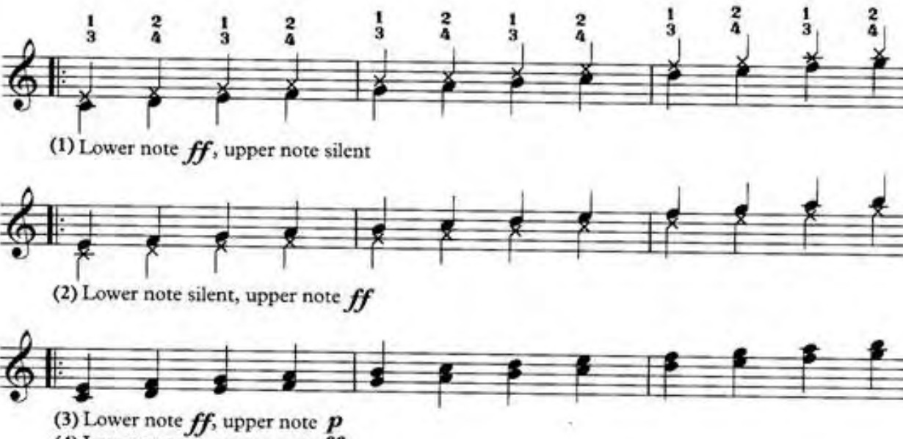
原書第 106 頁 · 實際譜例／圖示 譜例 ：標示五種力度組合：(1) 下方音 ff、上方音不發聲；(2) 下方音不發聲、上方音 ff；(3) 下方音 ff、上方音 p；(4) 下方音 p、上方音 ff；(5) 上下兩音皆 mf。指法 1/3、2/4。
兩根手指都放在弦上演奏這段，但只拉下方那條弦。用弓又大聲又沉重地拉，但左手保持非常輕，把弦按到剛好足以讓下方弦發聲即可。手指用得如此之輕，以致於不會讓弦碰到指板。去感受手指與手的輕盈與鬆弛，與弓的沉重形成對比。
重複，但只拉上方那條弦。
兩條弦一起拉，下方弦拉得重、上方弦拉得輕。兩根手指都保持非常輕地放在弦上，藉助上方弦上弓的輕盈來幫忙。
重複，但改為上方弦拉得重、下方弦拉得輕。
兩條弦平均地一起拉。用和先前相同的弓壓，由於重量現在分到兩條弦上，便不再顯得那麼誇張。左手保持和先前一樣的輕盈。
手指動作FINGER ACTION
關於從根部關節移動手指About moving fingers from the base joint
手指、手臂與腿在設計上都很相似，它們都有三個主要的「槓桿（levers）」。在每一組中，上方的槓桿最強，下方的槓桿最弱。
下列各項大致互相對應：
肩膀 — 髖部 — 手指的根部關節
手肘 — 膝蓋 — 手指的中間關節
手腕 — 腳踝 — 手指的指甲關節
手臂與腿最強的槓桿是上臂與大腿。廣義而言，這些槓桿從肩膀與髖部出發，執行所有最大、最強的肢體動作。同理，手指的主要動作應該來自根部關節——它可以稱為手指的「肩膀」。
試圖從中間關節（手指的「手肘」）來運作手指，或是靠著從手腕移動整隻手來部分地放下手指，都會嚴重降低動作的輕鬆度，並且是造成緊張的主因。
不要把手指從弦上抬起 ：而是從根部關節把它們往後拉，過程中不改變其形狀。要檢查手指是否正確地從根部關節移動，只需把手保持在演奏姿勢，然後一次一根，從根部關節把每一根手指往前移、再移回來。整隻手應該保持完全不動。
原書 106 Left Hand
三個暖身練習Three warm-up exercises
練習 1Exercise 1 · Ex. 149
把左手舉在身體前方，做成一個鬆鬆握著的拳頭形狀——手掌朝右，手指併攏並維持其自然的圓弧形。手背與前臂應形成一直線（圖 43a）。
突然把手指往後拉到圖 43b 所示的位置。保持手指彎曲。
短暫維持這個姿勢，然後突然往前推回起始位置（圖 43a）。
再次稍等片刻，然後再次往後拉。重複數次。
盡可能又快又遠地往後拉——只移動手指，不移動手與拇指——保持手背與前臂成一直線——手指移動時，保持拇指不動且放鬆——保持拇指根部與第一指之間的空間張開。
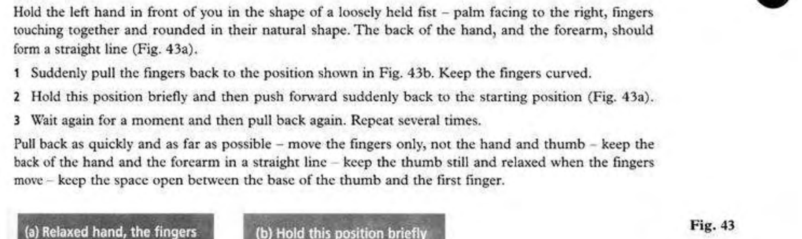
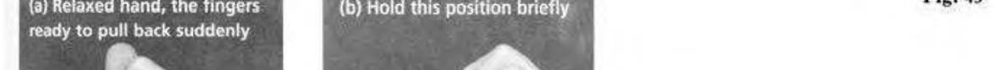
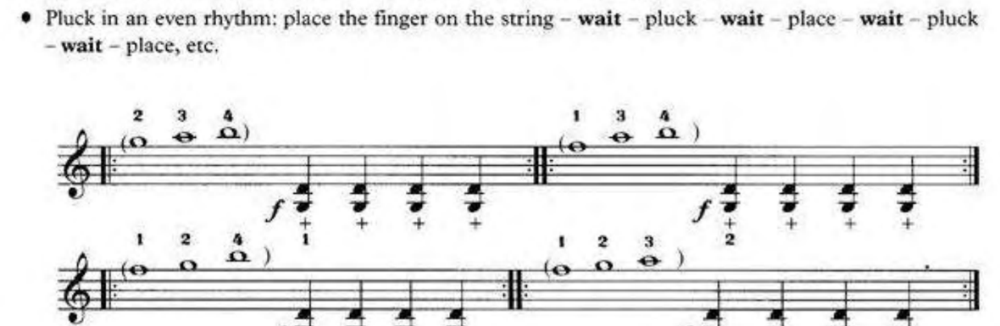
原書第 107 頁 · 實際譜例／圖示 圖片 Fig. 43 ：(a) 放鬆的手，手指準備好要突然往後拉 (b) 短暫維持這個姿勢譜例 ：左手撥弦練習譜，指法 2 3 4／1 3 4／1 2 4／1 2 3，標 f 與撥弦記號（＋）。
練習 2Exercise 2 · Ex. 150
把三根手指按在 E 弦上，用剩下的那一根手指撥（pluck）G 弦與 D 弦。保持前臂與手背成一直線，不要把手腕往外凸出。
大聲地撥，盡可能快地 從根部關節把手指往後拉。
以均勻的節奏撥：把手指放到弦上——等 ——撥——等 ——放——等 ——撥——等 ——放，以此類推。
原書 107 Left Hand
練習 3Exercise 3 · Ex. 151（圖 Fig. 44）
把左手手掌平貼在小提琴的肩部（shoulder of the violin）（圖 44）。
用手指一次一根、大聲地撥空弦 E，盡可能快地把手指往後拉。有節奏地移動手指：放手指——撥—放—撥，以此類推。
在 E 弦上輕巧而快速地上下叩擊（tap）手指。以四個一組有節奏地叩擊，手指做「向下—向下—向下—向下」，而不是「向上—向上—向上—向上」。
每一根手指都需要把手擺在略為不同的位置，以便每根手指使用時，其根部關節都能恰好位於小提琴邊緣（rim）的正上方。
只從根部關節移動每一根手指，保持手掌平貼在小提琴肩部。整隻手完全不應移動，保持放鬆而靜止。
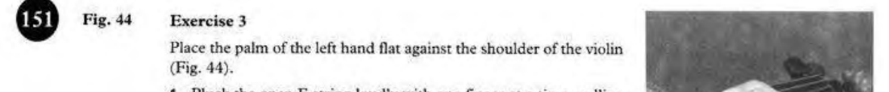
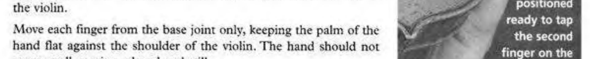
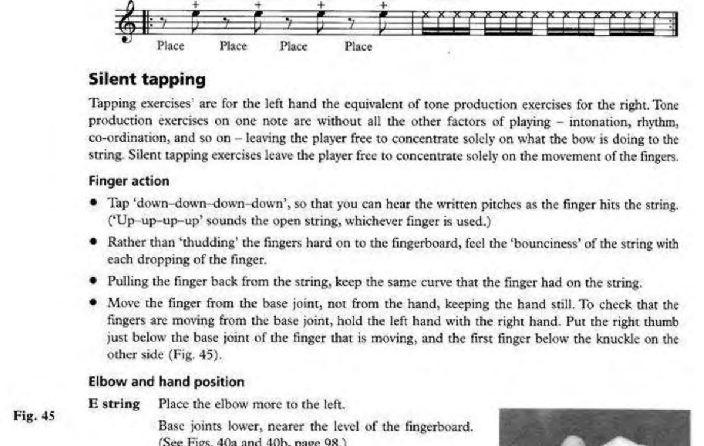
原書第 108 頁 · 實際譜例／圖示 圖片 ：照片說明： 手擺好位置，準備在 E 弦上叩擊第二指 。譜例 ：標示 撥（Pluck）／放（Place） 與 叩擊（Tapping） 段落。圖片 ：照片說明： 確保只有手指在動 （Making sure only the fingers move）。
無聲叩擊Silent tapping
叩擊練習對左手而言，相當於右手的發音（tone production）練習。在單一音上做的發音練習，排除了演奏的所有其他因素——音準、節奏、協調性等等——讓演奏者得以完全專注在弓對弦所做的事情上。無聲叩擊練習則讓演奏者得以完全專注在手指的動作上。
手指動作Finger action
叩擊時做「向下—向下—向下—向下」，使你在手指擊弦時能聽到譜上所寫的音高。（「向上—向上—向上—向上」不論用哪根手指，發出的都是空弦音。）
與其把手指用力「砰砰」地敲到指板上，不如在每一次落指時去感受弦的「彈性」。
把手指從弦上往後拉時，保持手指原本在弦上的相同弧度。
從根部關節移動手指，而非從手部移動，保持手靜止。要檢查手指是否從根部關節移動，可用右手握住左手。把右手拇指放在正移動的那根手指根部關節的正下方，並把右手第一指放在另一側指節（knuckle）的下方（圖 45）。
手肘與手部位置Elbow and hand position
E 弦： 手肘更往左擺。根部關節較低，更靠近指板的高度。（參見圖 40a 與 40b，第 98 頁。）
G 弦： 手肘更往右擺。根部關節較高。（參見圖 40c 與 40d。）
在任何弦的低把位，用第一指的側面輕觸琴頸。
拇指Thumb
保持拇指鬆弛、放鬆且不參與用力。把它放得比平常更靠前（大約對著第二指），使拇指根部與第一指之間有額外的空間。也練習讓拇指完全不碰琴頸，把琴頭（scroll）靠在牆上來支撐。
速度Tempo
從中等速度開始，♩=60–66，再逐步提升到 80–92。在快速時，讓手指貼近弦。
原書 108 Left Hand
練習 1Exercise 1 · Ex. 152
（不用弓地叩擊手指）
把手保持在同一個把位，只改變手指的形狀去搆到不同的音。例如，用「方形手指（square finger）」的第一指叩擊 A♭，感覺上應該和用「伸展手指（extended finger）」叩擊 A♮ 不一樣。1
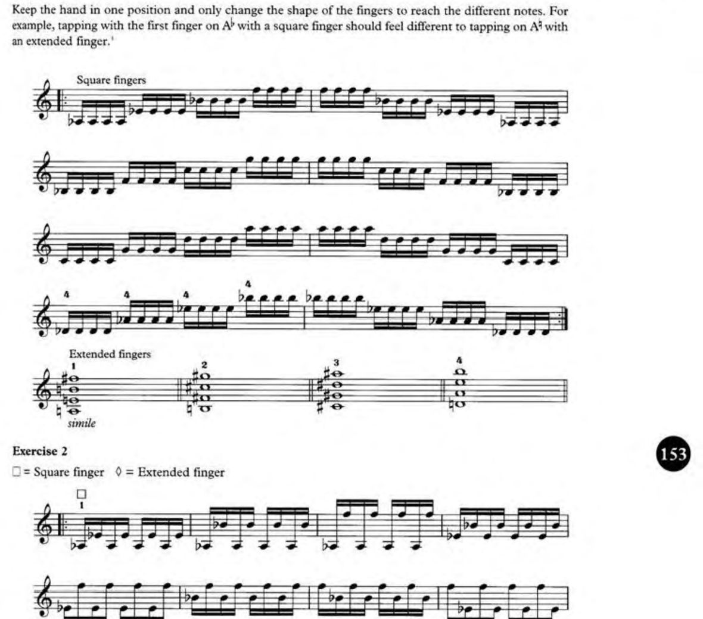
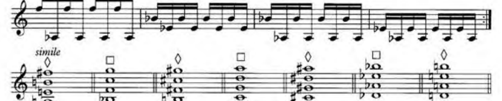
原書第 109 頁 · 實際譜例／圖示 譜例 ：標示 方形手指（Square fingers） 與 伸展手指（Extended fingers） 兩段，指法 1 2 3 4，標 simile（依此類推）。譜例 ：以 □／◊ 記號標示方形與伸展手型的練習譜。
練習 2Exercise 2 · Ex. 153
□ ＝ 方形手指（Square finger） ◊ ＝ 伸展手指（Extended finger）
原書 109 Left Hand
練習 3Exercise 3 · Ex. 154
把手保持在第一把位，只移動手指去搆到第二把位的音。
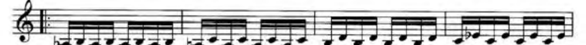
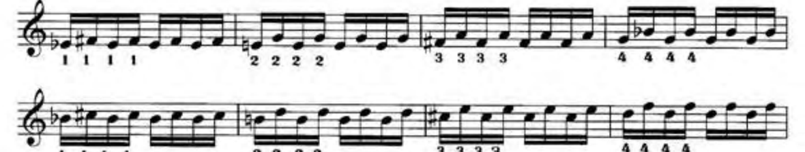
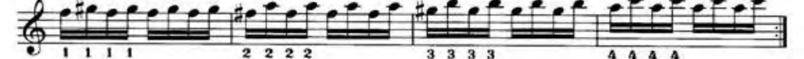
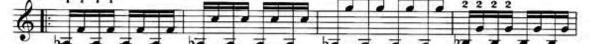
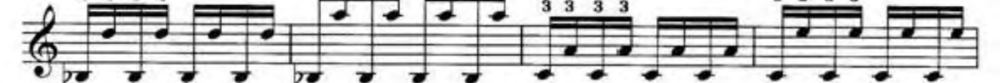
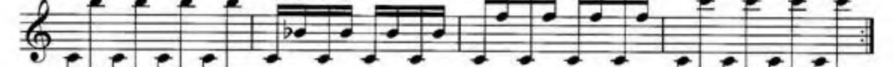
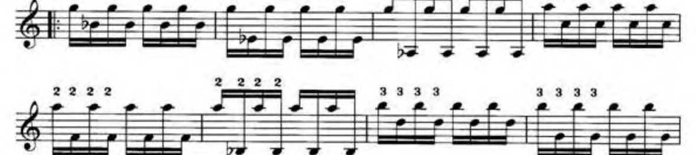
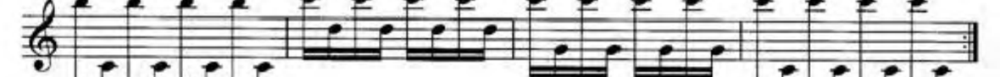
原書第 110 頁 · 實際譜例／圖示 譜例 ：指法 1111／2222／3333／4444 的叩擊練習譜。譜例 ：指法 1111／2222／3333／4444。譜例 ：指法 1111／2222／3333／4444。
練習 4Exercise 4 · Ex. 155
把手保持在第一把位，只移動手指去搆到第二把位的音。
把手保持在第二把位，只移動手指去搆到第一把位的音。
原書 110 Left Hand
練習 5Exercise 5 · Ex. 156–157
（不用弓地叩擊手指）
為了涵蓋不同的音程，使用下列的調號（key signatures）來演奏這個練習：
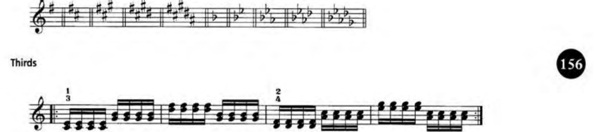
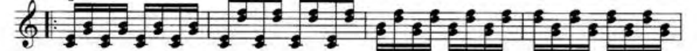
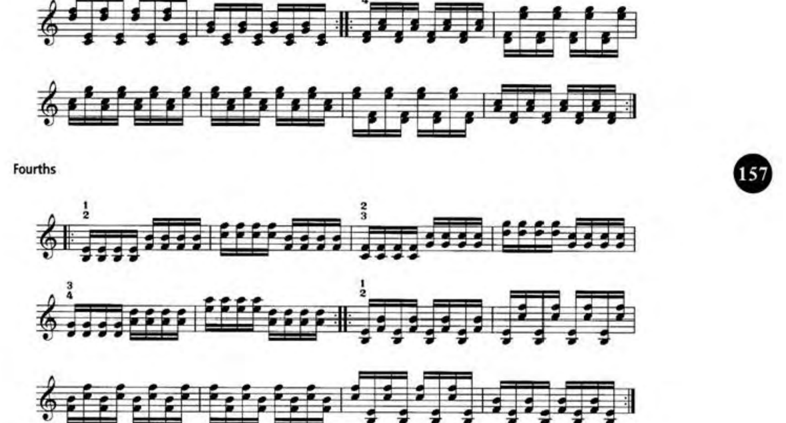
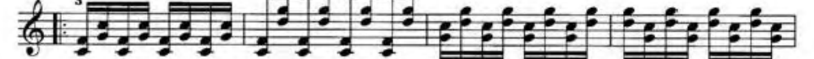
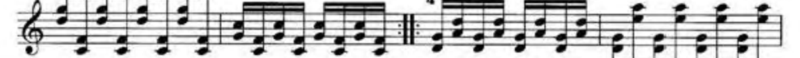
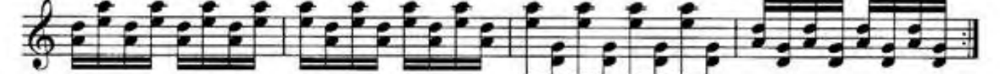
原書第 111 頁 · 實際譜例／圖示 譜例 ：一連串由升記號到降記號的調號。譜例 ：三度雙音叩擊練習譜，指法 1/3、2/4 等。譜例 ：四度雙音叩擊練習譜，指法 1/2、2/3、3/4 等。
三度（Thirds） · Ex. 156
四度（Fourths） · Ex. 157
原書 111 Left Hand
六度（Sixths） · Ex. 158
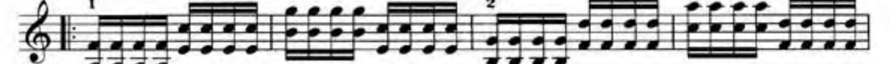
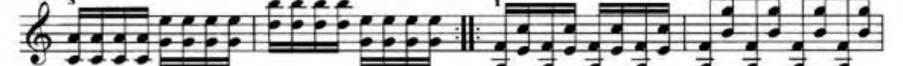
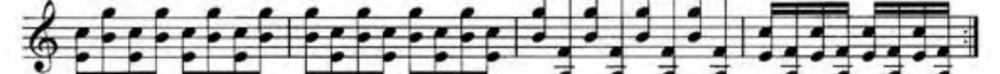
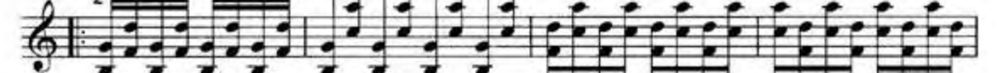
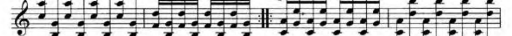
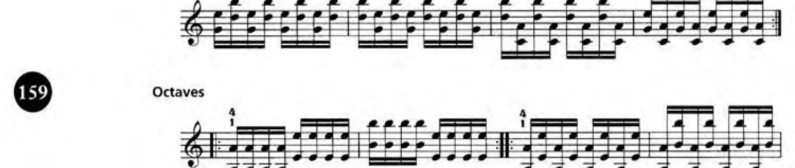
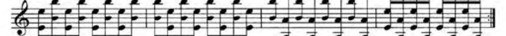
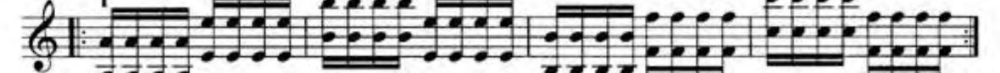
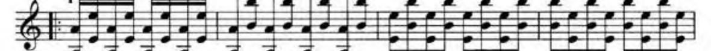
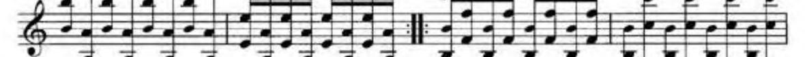
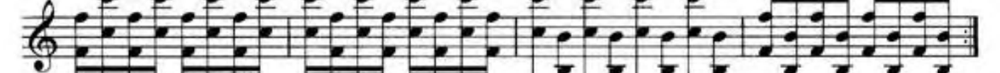
原書第 112 頁 · 實際譜例／圖示 譜例 ：六度雙音叩擊練習譜，指法 2/1、3/2、4/3 等。譜例 ：八度雙音叩擊練習譜，指法 4/1、3/1、4/2 等。
八度（Octaves） · Ex. 159
原書 112 Left Hand
方形與伸展SQUARE AND EXTENDED
□ ＝ 方形手指（Square finger） ◊ ＝ 伸展手指（Extended finger）1 圖 46a 顯示方形的形狀（A 弦上第二指的 C♮）。此時指甲關節與中間關節之間的夾角，比手指「伸展」時更接近直角。圖 46b 顯示伸展的形狀（第二指的 C♯）。此時手指從指甲關節到中間關節變得較直（但仍然彎曲）。
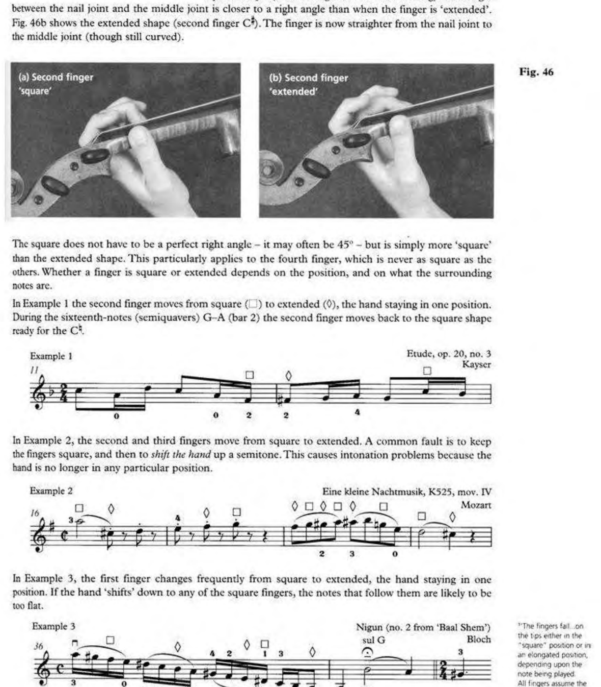
原書第 113 頁 · 實際譜例／圖示 圖片 Fig. 46 ：(a) 第二指「方形」 （Second finger 'square'） (b) 第二指「伸展」 （Second finger 'extended'）譜例 範例 1 ：練習曲 Etude, op. 20, no. 3 — Kayser（凱瑟） 。2/4 拍，標 □／◊ 與指法 0、2、4。譜例 範例 2 ：《小夜曲 Eine kleine Nachtmusik》, K525, 第四樂章 — Mozart（莫札特） 。標 □／◊ 與指法 2、3、0。譜例 範例 3 ：《Nigun》（《Baal Shem》第 2 首）— Bloch（布洛赫） 。標 sul G、□／◊ 與指法。 版權說明：Copyright © 1940 by Carl Fischer, Inc., New York. 版權續展。國際版權所有，經授權使用。
方形不必是完美的直角——往往可能是 45°——它只是比伸展的形狀更「方」而已。這一點尤其適用於第四指，它從來不會像其他手指那麼方。一根手指是方形還是伸展，取決於把位，以及周圍的音是什麼。
在範例 1 中，第二指從方形（□）變為伸展（◊），手保持在同一把位。在十六分音符（semiquavers）G–A（第 2 小節）期間，第二指變回方形，為 C♯ 做好準備。
在範例 2 中，第二指與第三指從方形變為伸展。一個常見的錯誤，是讓手指保持方形，然後把整隻手往上換把 半音。這會造成音準問題，因為手已不在任何特定的把位上了。
在範例 3 中，第一指頻繁地在方形與伸展之間變換，手保持在同一把位。如果手「換把」下行到任何一個方形手指上，緊接其後的音很可能會過低（太 flat）。
在接下來的練習中，保持手靜止，只移動手指。根部關節應保持放鬆而柔軟。速度：慢、中、快。
原書 113 Left Hand
練習 1Exercise 1 · Ex. 160
這個練習誇大了從方形到伸展的變換。
保持手靜止，只沿著弦移動手指。（音與音之間不要把手指抬起。）
在音與音之間放鬆，以盡量減少滑動的聲音。
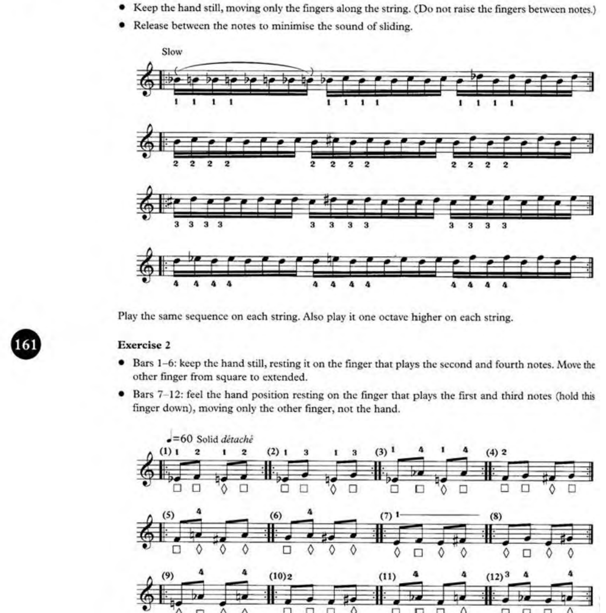
原書第 114 頁 · 實際譜例／圖示 譜例 ：標 Slow（慢），指法 1111／2222／3333／4444。譜例 ：♩=60， 紮實的分弓（Solid détaché） ，標 □／◊ 與指法。
在每一條弦上演奏相同的序列。也在每一條弦上高八度演奏。
練習 2Exercise 2 · Ex. 161
第 1–6 小節：保持手靜止，把它擱在演奏第二音與第四音的那根手指上。把另一根手指從方形移到伸展。
第 7–12 小節：感受手的位置擱在演奏第一音與第三音的那根手指上（把這根手指按住），只移動另一根手指，不移動手。
在其他弦上演奏相同的序列。
原書 114 Left Hand
練習 3Exercise 3 · Ex. 162
保持手靜止，只移動手指。
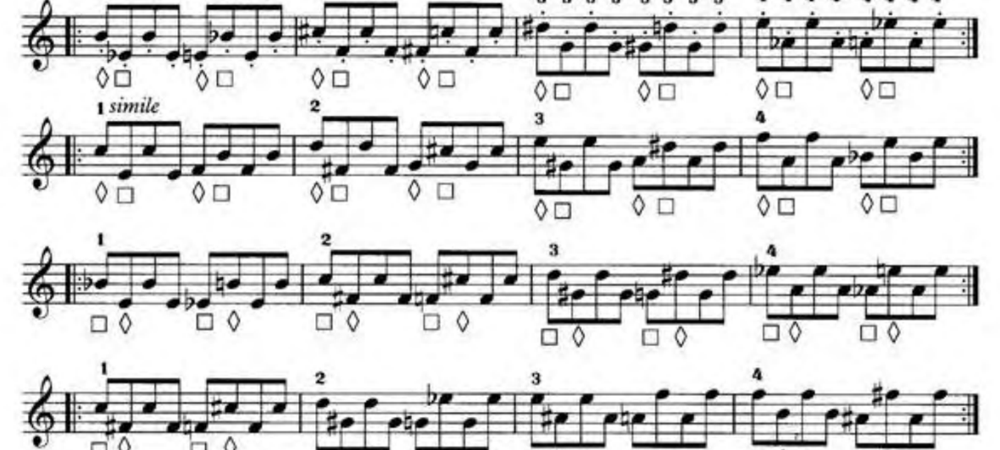
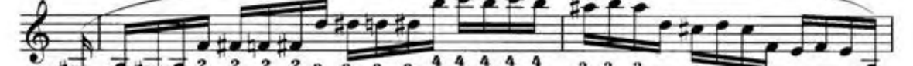
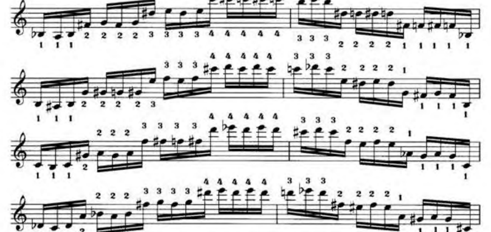
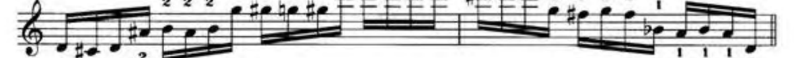
原書第 115 頁 · 實際譜例／圖示 譜例 ：♩=60， 跳弓（Spiccato） ，標 □／◊ 與指法 1 2 3 4。譜例 ：連弓音階式練習譜，指法上下行 1→4→1。
在 G–D 弦與 A–E 弦上演奏相同的序列。
練習 4Exercise 4 · Ex. 163
保持手靜止，只移動手指。
原書 115 Left Hand
替代練習Alternative
原書第 116 頁 · 實際譜例／圖示 譜例 ：連弓的半音階式練習譜，指法上下行 1→2→3→4→3→2→1。譜例 ：G 大調小提琴協奏曲 Violin Concerto in G, K216, 第一樂章 — Mozart（莫札特） 。標指法 2、4。
其他練習Other exercises
〈手指預備（Finger preparation）〉的練習，對於練習方形與伸展手型也很有用。1
把手指按住HOLDING FINGERS DOWN
交疊Overlapping
舉例來說，在上行音階中，從第四指跨到第一指時，要把第四指按住，直到第一指那個音開始之後 才放開。其他手指組合也以相同方式運作。
這與「手指預備」類似2 ，是左手技巧的另一個關鍵要素。要把「將下一根手指放到新弦上」與「再把上一根手指從舊弦上抬起」想成是同一個動作的兩半 ，而不是同時發生的兩個分開的動作（也就是第一指落下的同時第四指抬起）。
練習 1Exercise 1 · Ex. 164
這個練習強制做到提早的手指預備與交疊。在每一次換弦時，換弦之前 的手指與換弦之後 的手指，要像雙音一樣一起按住。
把演奏每小節第二音的手指（也就是換弦前那個音）按住，直到每小節第五拍的開頭。
提早、無聲地把下一根手指放到（下一條）弦上，落在每小節的第三拍。這根「已預備」的手指記譜為 ×音符。
原書 116 Left Hand
原書第 117 頁 · 實際譜例／圖示 譜例 ：練習譜標示： 恰好在第五拍把按住的手指抬起 、 恰好在第三拍放下 ×音符 ，指法 2、3、4。譜例 ：一連串升、降記號調號。譜例 ：把交疊處奏成雙音的練習譜。譜例 ：連弓快速音群，標第四指按住記號（4——），含 sul G。
用多種調演奏，以涵蓋不同的「全音—半音」可能性：
替代練習Alternative
與其無聲地把手指按住，不如把它們當作雙音奏出。如此一來，這個練習聽起來會如下：
練習 2Exercise 2 · Ex. 165
依標示把第四指按住。
原書 117 Left Hand
把第一指按住Holding down the first finger
在下行音階以及其他音階型的樂段中，如果你在其他手指繼續往下行音階時，把第一指留在弦上幾個音，手（因而還有音準）也許會比較穩定。
原書第 118 頁 · 實際譜例／圖示 譜例 ：G 大調奏鳴曲 Sonata in G, op. 78, 第一樂章 — Brahms（布拉姆斯） 。6/8 拍，標第一指與第四指按住記號。譜例 ：標第一指持續按住（1——），含 sul D–G、sul E–A。譜例 ：標第一指、第二指按住記號與 * 號的練習譜。
這些練習藉由把手指按住的時間比正常演奏更久，來誇大這種交疊。
練習 1Exercise 1 · Ex. 166
全程把第一指輕輕按在弦上。
練習 2Exercise 2 · Ex. 167
全程把第一指輕輕按在弦上。
在標 * 處，一邊演奏第四指，一邊用第一指往後伸展，然後讓手隨之跟進新的把位。往後伸展時不要把手腕往外凸。
在這個練習的第三、第二與第一把位中，往後伸展第一指時有把第一指根部與拇指擠在一起的危險：要保持拇指與第一指之間的空間張開。
原書 118 Left Hand
原書第 119 頁 · 實際譜例／圖示 譜例（接續） ：練習 2 的後續樂句，標第一指按住記號（1——）。譜例 ：西班牙交響曲 Symphonie espagnole, op. 21, 第一樂章 — Lalo（拉羅） 。標指法 0、4 與 (1)(2) 兩種對照。譜例 ：標延音記號（fermata）與指法 0、4 的練習譜。
快速手指FAST FINGERS
有時為了額外的清晰咬字（articulation），需要強而有力、如鎚擊般的手指動作；但一般使用時，這會讓手指變得沉重而笨拙。重要的是手指動作的速度 。手指有時必須緩慢地移動，但快速手指之所以常常必要，有兩個原因。
第一，音量越大，弦振動的幅度越寬；弦振動得越寬，手指就必須越快地落到弦上。
第二，用快速手指演奏時，快速的樂段感覺起來比較慢 。手指越快落到一個音上，落下的動作就能越晚才開始。所以一個快速樂段，若用「很晚」才在「最後一刻」全部極快落下的手指來演奏，會比用（在同樣速度下）移動較慢的手指來演奏時感覺更慢，因為每個動作之間有更長的等待。
關於抬指與落指的時機About timing lifting and dropping
要演奏得節奏均勻，你必須不均勻地 抬起與落下手指。
落下一根手指： 手指朝弦移動，然後新的音才奏出。
抬起一根手指： 新的音在手指離開弦的當下奏出。
因此，手指必須在需要新音之前 就開始落下，並且必須在 需要新音的當下被抬起。
在這個出自拉羅的範例中，第二小節顯示：如果抬指動作拖到需要新音的那一刻才做，樂段會變得多麼不均勻。
抬指與落指之間時機上的差異，正是為什麼通常最好盡可能晚才移動手指、然後極快地移動它們的原因之一。除了改善清晰度、給演奏者一種多出時間的感覺、以及讓大音量的演奏成為可能之外，在最後一刻快速移動手指，也讓細緻的節奏更容易達成。
練習方法Practice method
有一個簡單的練習技巧，可以把那些「漏掉（drop out）」的音變得均勻：把它們奏得比周圍的音更長、更大聲。1
原書 119 Left Hand
抬離Lift-off
練習 1Exercise 1 · Ex. 168
演奏上弓時，在弓尖（point）附近用非常短的跳弓。讓這些弓法聽起來類似左手撥弦（left-hand pizzicato）。
就這個練習而言，只用手指來撥弦，從根部關節把它往後拉，沒有任何手部動作。
速度：慢、中、快。
原書第 120 頁 · 實際譜例／圖示 譜例 ：標 pluck（撥）、上弓（V）記號與指法 1/0、2/0、3/0、4/0、2/1、3/1、4/1、4/2、4/3、3/2。譜例 ：♩=60，sul G，力度 fff，指法 1、2、3、4。
在 G 弦上重複相同的模式。撥 E 弦時手肘更往左擺，撥 G 弦時更往右擺。
練習 2Exercise 2 · Ex. 169
從高把位抬離到空弦，需要最快的手指動作，以避免手指離弦時聲音中出現「毛邊（fuzz）」。要避免「毛邊」，可以用輕微的撥弦動作來抬指（如同大提琴演奏），但這個練習的重點在於：盡可能快地抬指而不 撥弦，然後在較低把位使用相同的抬離速度。
靠近琴橋強力演奏：音量越大，手指就必須抬得越快。
在高把位，極快地抬指，使空弦立刻發聲。記住快速抬離的感覺，然後在第一把位使用相同的抬離速度。
為了讓練習盡可能有效，手指要垂直地抬起，不帶任何往側面的撥動。保持弓持續發聲，不要在每次抬離前奏出輕微的漸弱（diminuendo） 。
在每一條弦上演奏相同的序列。
原書 120 Left Hand
逐步加快速度Gradually increasing speed
練習 1Exercise 1 · Ex. 170
弦振動得越寬（也就是音量越大），手指就必須越快地觸弦或離弦。
從 pp 開始，緩慢地落下與抬起手指。
隨著音量增大，等待越來越久 才落下或抬起，把手指移動得越來越快。
無論力度或手指移動的速度為何，聲音都應該始終是純淨的，在手指觸弦或離弦時不帶任何「毛邊」。奏 mf 或 ff 時，去聆聽手指落下或抬起時那個「叮（ping）」的聲音。
關於發音點（soundpoints）的說明，參見第 41 頁。
原書第 121 頁 · 實際譜例／圖示 譜例 ：♩=50。標 pp／發音點 5、mf／發音點 3、ff／發音點 2–1、simile。指法 0、1、4。譜例 ：四個階段標示： 非常緩慢地落下與抬起 F 、 落下或抬起前稍等一下，然後把手指移動得快一些 、 落下或抬起前等久一點，然後把手指移動得快得多 、 盡可能久地等待，然後在「最後一刻」極快地移動 。
在每一條弦上演奏。
練習 2Exercise 2 · Ex. 171
用節拍器設在 ♩=60 演奏，以確保只有手指的速度改變，而速度（tempo）不變。
非常緩慢地抬起與落下手指，慢到它持續移動而不停頓——也就是說，它在某一拍開始落下，慢到恰好在下一拍觸弦，然後立刻又開始抬起。當手指沒有好好按穩弦時，這會在音裡造成「破裂（cracking）」與「毛邊」。
一點一點地加快手指移動的速度，使你在落下或抬起之後，等待下一拍的時間越來越久。音的純淨度會逐漸改善。
最後，用如此快速的手指動作演奏，使手指大部分時間都是靜止的——不是抬起來等著要落下，就是落下後等著要抬起。
在每一條弦上用下列指法演奏：01, 02, 03, 04；12, 13, 14；23, 24；34。
原書 121 Left Hand
慢速度、快手指Slow tempo, fast fingers
練習 1Exercise 1 · Ex. 172
靠近琴橋奏 f，音色持續而均勻。
盡可能晚 且盡可能快 地移動手指，同時用非常慢的速度演奏。
每個音都應該以手指落下或抬起時的那個「叮」聲開始。把手指抬得比平常更高，使手指必須移動得非常快。
使用全弓，使弓速非常快，讓弦盡可能寬地振動。
在抬起較高的手指之前，先把較低的手指放到弦上。1
原書第 122 頁 · 實際譜例／圖示 譜例 ：♩=60，標 sempre f（始終 f）、simile，含多種指法。
在每一條弦上演奏相同的序列。
練習方法Practice method
用非常慢的速度，把任何中等到快速的樂段（或一次一整首樂曲）奏過一遍，同時非常快速地落下與抬起手指。等到最後一刻才移動每一根手指——把手指保持靜止久到「再多等一瞬間就會讓那個音遲到」的程度；然後極快地抬起或落下。（那些已經預備在弦上的手指，仍應該是「放上去」而非快速「落下」。）
練習 2Exercise 2 · Ex. 173
在這個練習中，手指的「速度」是慢的，因為它們只在每一拍上移動；但手指從一對音移到另一對音的移動速度，必須夠快才能與弓協調。
盡可能快地演奏，使手指必須非常快速地移動，才能及時到達下一個位置。從 ♪=92 開始。在 ♪=120 重複，再在 ♪=144 重複。
換手指時不應有額外的聲音。要移動得快到：(1) 弓從不碰到空弦，(2) 不會因為拉到一條尚未完全按住的弦，而在每一組的開頭造成「毛邊」。
就這個練習而言，把每一對手指抬起，再放到下一條弦上——不要同時把手指按在兩條弦上。
一開始讓手指貼近弦。之後把它們抬得越來越高，使你必須越來越快地移動它們。
原書 122 Left Hand
原書第 123 頁 · 實際譜例／圖示 譜例（接續） ：標 快速跳弓或自然跳弓（Fast spiccato or sautillé） 、simile，含多種指法（在 G–D 與 D–A 弦上也演奏）。譜例 ：標 simile 與多種指法。在每一條弦上演奏。譜例 ：標指法 1、2、3。在 G 弦與 A 弦上也演奏。
簡易變化Easy variation · Ex. 174
從 ♪=92 開始。在 120 重複，再在 144 重複。
困難變化Difficult variation · Ex. 175
把每一對音中較低的音放在 D 弦上。一次只演奏一行，先奏上面那行，再奏下面那行。由於手指要移動的距離非常遠，它必須移動得更快：
原書 123 Left Hand
練習 3Exercise 3 · Ex. 176
用非常快的分弓（détaché） 演奏，停在一個強烈加重音（accent）的八分音符（quaver）上。無論重音多強，都要用純淨的音色奏出這個八分音符，並讓手指在弓奏出它之前就已完全按穩這個音。每一小節除了從下弓開始之外，也要從上弓開始。
原書第 124 頁 · 實際譜例／圖示 譜例 ：♩=66，標重音記號（>）與指法 1、3。譜例 ：列出系統化指法：0 1、0 2、0 3、0 4、1 0、1 2、1 3、1 4……2 4、3 0、3 1、3 2、3 4、4 0、4 1、4 2、4 3。譜例 ：標 ×音符與指法 1、3。在 E 弦與 D 弦上也演奏。
指法Fingerings
在每一條弦上演奏。
困難變化Difficult variation · Ex. 177
把每一對手指中較高的那根手指放到 G 弦上而不奏出它（記譜為 ×音符）。只演奏上面那行，把手指按在 G 弦上，直到它在 A 弦上被需要的那一瞬間。由於手指要移動的距離非常遠，它必須移動得更快：
節奏Rhythms · Ex. 178
精確地演奏這些節奏，做到弓與手指的完美協調。把三十二分音符（demisemiquavers）奏得清楚。
落下手指： 為了逼出最快的手指速度，在落下前讓手指保持得比平常略高。在弓移動前的最後一刻才落下——不要把手指降到貼近弦、準備好要演奏的位置（這不是通則，但在這個練習中如此）。抬起手指： 在抬起之前，先把下一根手指放到下方的弦上1 ；把手指抬得異常地高。在弓移動前的最後一刻才抬起。
原書 124 Left Hand
原書第 125 頁 · 實際譜例／圖示 譜例（接續） ：標 sfz、simile、弓法記號（⊓ V），以及說明： 等到最後一刻才放下第 1 指 。
第四指FOURTH FINGER
除了下方的五個練習之外，也演奏練習 196 中第四指的小節。也只用第四指來演奏音階、琶音與分解音程（練習 211–213）。
使用第四指時：
保持拇指根部與第一指之間的空間張開（讓拇指對著第一指，或位於第一指與第二指之間）。
從根部關節上下移動手指，不牽動手部。
保持從手肘到手背成一直線。
盡可能晚且盡可能快地落下與抬起手指。
如果第四指在中間關節塌陷，就多用第四指的指尖、少用指腹來演奏。
絕不勉強用力。 在這些練習中，凡是對你的手來說真的太困難的伸展，就直接略過。在許多情況下，你可以輕易地增加手指能搆到的距離：保持手、手指與拇指完全鬆弛，在第一指與第二指處把手張開，並在根部關節處加寬——一個常見的錯誤，是繃緊手與根部關節，並試圖用第四指往上硬伸 。讓手與手指放鬆地融入伸展之中。
要把第三指與第四指之間的根部關節張得更開，演奏第三指時稍微多用指尖的左側，演奏第四指時稍微多用指尖的右側。換句話說，把第三指稍微往琴頭方向傾，把第四指稍微往琴橋方向傾。
在每一條弦上演奏這些練習。
原書 125 Left Hand
練習 1Exercise 1 · Ex. 179
全程把第三指按住。讓第一指輕放在弦上（以括號中的音表示）。
完全只靠第四指自己、從根部關節移動它。不要用手部來移動手指。
要把根部關節張得更開，演奏第三指時稍微多用指尖左側，演奏第四指時稍微多用指尖右側。
原書第 126 頁 · 實際譜例／圖示 譜例 ：第五把位 sul A／第三把位／第一把位，標第三指按住（3——）與相同指法（4、4 4 4……）。譜例 ：標 左手撥弦（left hand pizz.） f，指法 4、4/0、3。
練習 2Exercise 2 · Ex. 180
要把根部關節張得更開，演奏第三指時稍微多用指尖左側，演奏第四指時稍微多用指尖右側。
用第四指撥弦時，持續保持全音符（semibreve）發聲。
大聲地撥，以盡可能多地鍛鍊手指。
使用第四指時，保持手、拇指與手腕靜止而放鬆。讓第一指輕放在弦上（以括號中的音表示）。
原書 126 Left Hand
練習 3Exercise 3 · Ex. 181
大聲地演奏，以盡可能多地鍛鍊第四指。
要把根部關節張得更開，演奏第三指時稍微多用指尖左側，演奏第四指時稍微多用指尖右側。
全程把第三指按住。讓第一指輕放在弦上（以括號中的音表示）。
在 G–D 弦與 D–A 弦上也演奏。
原書第 127 頁 · 實際譜例／圖示 譜例 ：第五把位／第三把位／第一把位，標第三指按住（3——）與指法 4 3 4 3。譜例 ：力度 ff，標 simile 與指法 0 4 1 2 3。譜例 ：(1)(2) 兩種附點節奏變化。
練習 4Exercise 4 · Ex. 182
盡可能久地把第一指與第二指按在弦上。演奏第四指時把第三指按住。
盡可能晚 且盡可能快 地抬起與落下第四指，從根部關節移動。
在抬起第四指之前，下一根手指必須已經放到下方的弦上。這適用於每小節的第 3、5、7、9、11 音。
聆聽手指按弦或離弦時的「叮」聲。
節奏變化Rhythm variations
從第一把位開始，在其他弦上演奏相同的序列。
原書 127 Left Hand
練習 5Exercise 5 · Ex. 183
原書第 128 頁 · 實際譜例／圖示 譜例 ：第七把位 sul D／第四把位／第一把位，標 simile 與指法 1 2 4 3 4 3 4 3 4 2 4。
在其他弦上，於第七、第四與第一把位演奏相同的序列。
原書 128 Left Hand
協調CO-ORDINATION
在許多情況下，要讓弓準備好演奏一個音，比要讓左手手指準備好按在弦上來得容易。手指可能需要逐音改變形狀，或是在整隻手換把移動之後才放下；視先前的情況而定，它們可能要從不同的高度落下，或必須從另一條弦橫越過來；有些手指可能需要在抬起另一根手指之前先放到弦上，如此等等。與此同時，弓也許只是在同一條弦上來回移動而已。
左手手指必須始終領先 。如果手指遲到，就會因為拉到一條只按了一半的弦而造成一瞬間的「毛邊」。
要嘛是手指太晚才找到弦，而弓在手指尚未按穩音時就已開始移動——要嘛是手指太晚才抬離，下一弓在演奏較低的音之前又短暫地碰到了它。這兩個練習則從相反的極端著手，刻意讓手指移動得太早。
有一個示範完美協調的簡單方法，就是撥弦演奏：放下手指與撥動它之間的時機差異一目了然。在下面的範例中，先撥弦演奏，然後以撥弦時相同的時機用弓演奏。
原書第 129 頁 · 實際譜例／圖示 譜例 ：D 大調小提琴協奏曲 Violin Concerto in D, op. 61, 第一樂章 — Beethoven（貝多芬） 。標 (1) 撥弦（pizzicato）、(2) 用弓（arco）。譜例 範例 ：（指法模式的第 5、6 小節——見 *）標示： 奏到休止符 、 讓弓留在弦上 、 無聲地放下 、 抬起第二指，讓第一指備妥 、 抬起第三指，讓第一指備妥 。指法 1、2、3。譜例 ：0 1、0 2、0 3、0 4、1 2、1 3、1 4……2 3、2 4、3 4、3 4。標 * 號。
手指「領先」Fingers 'leading'
練習 1Exercise 1 · Ex. 184
均勻而紮實地持續奏出每小節的第一個音，在第二拍突然把弓停住。讓弓留在弦上，不要減輕壓力。
在第三拍，無聲地把新的手指放到弦上（記譜為 ×音符）。
用節拍器 ♩=100 把整個序列奏過一遍，然後逐步加快到 200，或更快。在每一個節拍器速度上，把每一小節重複數次。
指法模式Fingering pattern
在其他弦上也演奏相同的模式。
原書 129 Left Hand
練習 2Exercise 2 · Ex. 185
用節拍器打四分音符（crotchets）演奏。
把第一個音按住得越來越久，使第二個音越來越接近換弓的時刻。
持續到第二個音只比換弓早一丁點，然後以完美的協調只演奏這兩個音。
原書第 130 頁 · 實際譜例／圖示 譜例 ：♩=60，標弓法（⊓ V）的練習譜。譜例 ：0 1、0 2、0 3、0 4、1 0、1 2……4 3 等系統化指法。在其他弦上也演奏相同指法。譜例 ：《冬》（四季）Winter (The Four Seasons) op. 8 no. 4, 第一樂章 — Vivaldi（韋瓦第） 。標附點節奏與指法 1、2、0。譜例 ：42 首練習曲 42 Etudes ou caprices, no. 2 — Kreutzer（克羅采） 。4/4 拍，標 * 號與指法 0、4。
指法Fingerings
練習方法Practice method
從慢速度開始，把附點奏得盡可能長、把短音奏得盡可能短。逐步加快速度，直到這個附點型可以實際演奏得最快為止，過程中始終感覺手指比弓早一丁點。這是最有效的單一練習方法之一，能立即見效。
手指預備Finger preparation
「手指預備」是「技術性時機（technical timing）」相對於「音樂性時機（musical timing）」的另一個例子（見第 27 頁的註腳）。要讓任何下行的音演奏得平順而無縫，較低的手指必須在抬起較高的手指之前，就已經備妥在弦上。
在上面的範例中，雖然演奏第一音與第三音的手指顯然必須在弓移動之前就在弦上，但那是協調性的問題——它們本身並非「已預備」的手指。第四音（第一指 F）才是已預備的手指。無論速度為何，這根手指都在演奏前一個音（第二指 G）時就放到弦上。一開始，這根已預備的第一指不用力按，只把音按到一半。然後，當第二指抬起時，第一指才把 F 完全按穩。
第七音（第三指 D）是已預備的手指，並在弓抵達 A 弦之前的一瞬間就把弦完全按穩。第九音（第二指 C）則與第四音（F）類似。
原書 130 Left Hand
練習 1Exercise 1 · Ex. 186
把已預備的手指放得非常早、像切分音（syncopation）一樣，以誇大手指預備，如範例中的 ×音符所示。不要把已預備的手指按下去 ——而是把它們輕輕擱在弦上，然後在抬起前一根手指的同時把弦按住 。換句話說，「按住新音」與「結束舊音」是同一個動作的兩半 ，而不是兩個分開的動作。
原書第 131 頁 · 實際譜例／圖示 譜例 範例 ：標 ×音符、simile 與指法 2 1、3 1、4 1、3 2、4 3 等。
原書 131 Left Hand
練習 2Exercise 2 · Ex. 187
這裡每一組的第三音落在較低的弦上。把它放得早一些、像切分音一樣，如範例所示：
原書第 132 頁 · 實際譜例／圖示 譜例 範例 ：標 simile 與指法 1、2、4。譜例 ：第五把位／第四把位，指法 2。譜例 ：標 simile 與指法 1。
其他把位Other positions
在 D 弦與 G 弦上從第五把位開始，在 E 弦與 A 弦上從第四把位開始：
練習 3Exercise 3 · Ex. 188
這裡是第四音被預備。把它放得早一些、像切分音一樣。
原書 132 Left Hand
其他把位Other positions
在 G 弦與 D 弦上從第五把位開始，在 A 弦與 E 弦上從第四把位開始：
原書第 133 頁 · 實際譜例／圖示 譜例 ：第五把位／第四把位，指法 1。譜例 範例 ：標 ×音符、simile 與指法 4、3。譜例 ：第五把位／第四把位，指法 4。
練習 4Exercise 4 · Ex. 189
這裡每一組的第二音與第四音是已預備的手指。把它們放得早一些、像切分音一樣，如範例所示。
其他把位Other positions
在 D 弦與 G 弦上從第五把位開始，在 E 弦與 A 弦上從第四把位開始：
原書 133 Left Hand
練習 5Exercise 5 · Ex. 190
把每一組的第二音與第四音預備好，將它們放得早一些、像切分音一樣。
原書第 134 頁 · 實際譜例／圖示 譜例 ：標 simile 與指法 4。譜例 ：第五把位／第四把位，指法 4。譜例 ：♩=60、63、66、69，標指法 1 2／2 3／3 4。
其他把位Other positions
在 G 弦與 D 弦上從第五把位開始，在 A 弦與 E 弦上從第四把位開始：
顫音TRILLS
放鬆較低的手指Releasing the lower finger
在小提琴上的大多數動作，都有一個反向動作，通常與主要動作呈反向運動（contrary motion）。就顫音（trills）而言，較低的手指會（幾乎看不見地）朝與較高手指相反的方向移動。
顫音中那根較低的、按住的手指，不能按得太用力，否則較高的手指就無法自由地移動。
練習 1Exercise 1 · Ex. 191
隨著音的速度加快，泛音仍應清楚地發聲。
原書 134 Left Hand
指法Fingerings
原書第 135 頁 · 實際譜例／圖示 譜例 ：指法 1 2、1 3、1 4、2 3、2 4、3 4。譜例 ：♩=120，標 把第一指抬高 、simile 與指法 1、2。譜例 ：短指法模式 ：1 2、1 3、1 4、2 3、2 4、3 4。 長指法模式 ：更長的組合序列。
在泛音期間，徹底放鬆手腕、手、手指與拇指。演奏較高的手指時，保持那份放鬆的感覺。
演奏較高的手指時，讓奏泛音的那根手指仍輕觸在弦上。
用節拍器演奏，從 ♩=60 緩慢開始，逐步把速度加到 63、66 與 69。
在其他弦上也演奏相同的模式。
練習 2Exercise 2 · Ex. 192
當你落下較高的手指時，把較低的手指抬得相當高，讓這兩根手指做反向運動。
指法Fingerings
在其他弦上演奏相同的模式。
原書 135 Left Hand
練習 3Exercise 3 · Ex. 193
原書第 136 頁 · 實際譜例／圖示 譜例 ：泛音顫音練習譜，指法 1 2、2 3、3 4 等。譜例 ：標 (tr) 顫音記號與高八度（8va）的泛音結果。譜例 ：力度 f，標 simile、弓法記號與 (1)–(6) 逐步增加顫音音數。
當顫音夠快時，這個練習中每一對泛音裡較高的那個，會比正常高出一個五度（因為較低的手指仍持續觸弦），於是顫音聽起來會如下：
如果顫音聽起來不清楚，試著靠近琴橋演奏，或用更快的弓速，並確認較低的手指（它必須留在弦上）既不太重也不太輕。
像這樣用泛音顫音，能讓手指獲得一種格外輕鬆與輕盈的感覺。以最少的力氣追求最快的顫音。手與手指應該幾乎完全沒有任何用力的感覺。然後在一般的顫音中找到同樣的毫不費力感。
逐音建立顫音Building trills note by note · Ex. 194
在演奏每一個顫音之前，先靠近琴橋持續奏出長的 f 弓，讓弦盡可能寬地振動。不加揉弦（vibrato）演奏。
把顫音手指抬到比正常高度略高一點——非常快速地落到弦上——快速抬離、回到那個比正常略高的位置，然後放鬆。從根部關節移動手指。聆聽手指擊弦或離弦時的「叮」聲。 使用手指時保持聲音持續。
把手指抬到比正常高度略高一點——快速落到弦上——只稍微 抬起——再次快速落下——快速抬回起始位置。
把手指抬到比正常高度略高一點——快速落到弦上——稍微 抬起——再次快速落下——稍微 抬起——再次快速落下——快速抬回起始位置。
第 4–6 個範例顯示最多六個顫音音。繼續增加到大約八或九個。
把顫音的每一個音都奏得清楚而乾淨，讓小提琴鳴響。不應有因為太早抬指、或因為落下或抬起太慢所造成的「毛邊」。
原書 136 Left Hand
這個練習牽涉三個時機問題：(1) 手指落下的速度有多快，(2) 它在弦上停留多久，以及 (3) 它被抬起的速度有多快。
尤其在雙音中，留在弦上的那些手指不要過度按壓。
指法Fingerings
原書第 137 頁 · 實際譜例／圖示 譜例 ：短指法模式 、 長指法模式 與 雙音（Double stops） 三組，含指法 0 1……3 4 等。譜例 ：g 小調小提琴協奏曲 Violin Concerto in G minor, op. 26, 第一樂章 — Bruch（布魯赫） 。標 tr 顫音記號與指法 1、2，標 (etc.)。
在其他弦上演奏相同的模式。
方向Direction · Ex. 195
顫音手指的動作是「向上—向上—向上—向上」，而不是「向下—向下—向下—向下」，也不是「向下—向上—向下—向上」。如果把海飛茲（Heifetz）演奏布魯赫協奏曲的錄音1 （或許多其他演奏家的錄音）以半速播放，第一樂章的顫音樂段聽起來並不均勻，而實際上大約聽起來像這樣：
原書 137 Left Hand
下面這個簡單的練習，既可用來建立顫音的技巧，也可作為特定顫音樂段的練習方法。快速地抬起顫音手指，彷彿弦非常燙一般。
原書第 138 頁 · 實際譜例／圖示 譜例 ：顫音練習譜，標指法 1。譜例 ：♩=60–80，涵蓋兩指所有組合的節奏練習譜。
指法Fingerings
使用與練習 194 相同的模式，在每一條弦或每一對弦上演奏。
節奏練習Rhythm exercise · Ex. 196
這是 Ševcik（謝夫契克）類型練習的一個快速替代品，作為一般性的快速暖身練習也十分出色，涵蓋了兩根手指的所有可能組合。
用節拍器演奏，從 ♩=60 緩慢開始，逐步加快到大約 80。
盡可能晚 且盡可能快 地落下與抬起手指，讓每個音都有乾淨的開始與結束。
大聲地演奏，以盡可能多地鍛鍊手指。
從根部關節移動手指，不要連整隻手也從手腕移動。如果這一點無法完全做到，就把不用的手指按在另一條弦上，以取得「手指移動而手不動」的感覺。
指法Fingerings
使用與練習 194 相同的模式，在每一條弦或每一對弦上演奏。
原書 138 Left Hand
區塊BLOCKS · Ex. 197
把每一根手指當作分開的動作個別落下或抬起，只能快到某個速度為止。在那之後，要演奏得非常快，更容易的做法是把成組的手指一次全部、以一個動作 呈扇形地落下或抬起，使這些音幾乎同時奏出。如此一來要執行的手指動作就更少，而快速樂段感覺起來比較慢 。在下面的範例中（見〈練習方法〉），手指動作的數目（不計換把）從十七個減為六個。
上行： 在演奏小節開頭的四分音符（crotchet）時，把其他手指依其「全音—半音」的型態預備在弦的上方。把這些手指當作一個動作一起落下。雖然非常快，每個音仍應清楚。
下行： 把下方的音準確地預備在弦上，然後以一個動作把整組手指「傾離（tilt）」弦面。
原書第 139 頁 · 實際譜例／圖示 譜例 ：♩=60，標 simile 與 ×音符（預備手指）。譜例 ：標 simile 的接續練習譜。
接著繼續演奏與先前相同的型態，但這次不停在第一個音上。在弓開始移動後的一瞬間落下或抬起手指，把它們「傾上」或「傾離」弦面。
在每一條弦上演奏整個練習。使用多種調號以涵蓋不同的「全音—半音」可能性。
原書 139 Left Hand
練習方法Practice method
依下列方式練習快速的跑句（runs），把手指當作一個動作一起落下：
原書第 140 頁 · 實際譜例／圖示 譜例 ：g 小調小提琴協奏曲 Violin Concerto in G minor, op. 26, 第一樂章 — Bruch（布魯赫） 。標指法 0、1、4。譜例 ：(1)–(6) 各組，指法 1 2、1 3、1 4、2 3、2 4、3 4。
以相同方式練習下行的跑句。
伸展與收縮EXTENSIONS AND CONTRACTIONS
伸展Extensions
下列任何伸展，如果在第一把位演奏時對你的手的大小而言是不可能的，就單純地把手指盡量往那個方向移動即可。
保持手腕與前臂大致成一直線，不要在伸展的手指往上搆時把手腕往前推。（參見圖 39，第 97 頁。）
把拇指放得相當靠前，張開拇指根部與第一指之間的空間。
藉由在根部關節處加寬來增加手指的伸展幅度，使用指尖上最能在手指之間製造空間的那個部位。1 基本上，盡量讓第二、三、四指在弦上保持越直立越好（這不是通則，但在這些練習中如此）。
在伸展上方或下方的另一根手指時，正在演奏的那個音的音高不應改變。
練習 1Exercise 1 · Ex. 198
上行： 讓兩根手指中較低的那根輕放在弦上，在放下較高的手指時不要把它抬離。例如，在第一小節中不要抬起第一指。
原書 140 Left Hand
下行Descending
把每一小節的第二音與第四音放到弦上，然後再抬起第一音與第三音。1
原書第 141 頁 · 實際譜例／圖示 譜例 ：(1)–(6) 各組，指法 4 3、4 2、4 1、3 2、3 1、2 1。譜例 ：標 sul D／sul A／sul E，指法 1 2。譜例 ：sul D，標 simile 與指法 1 2。
其他把位Other positions
在其他弦上以各種八度演奏相同的音：
練習 2Exercise 2 · Ex. 199
上行： 全程把兩根手指中較低的那根按在弦上。下行： 在較低的手指穩穩按到弦上之前，不要抬起較高的手指。
原書 141 Left Hand
以相同方式繼續，把每一小節連弓並至少重複兩次：
原書第 142 頁 · 實際譜例／圖示 譜例 ：標 繼續往上 D 弦（Continue up the D string） 、etc. 與指法 1 3、1 4、2 3、2 4、3 4。譜例 ：一連串升、降記號調號。譜例 ：sul D，含複雜的多指組合指法。
使用下列調號演奏這個練習：
從第一把位開始，在其他弦上演奏相同的模式。
練習 3Exercise 3 · Ex. 200
上行： 全程把兩根手指中較低的那根按在弦上。下行： 在較低的手指穩穩按到弦上之前，不要抬起較高的手指。
原書 142 Left Hand
使用下列調號演奏這個練習：
原書第 143 頁 · 實際譜例／圖示 譜例 ：一連串升、降記號調號。譜例 ：sul D，指法 1 4。譜例 ：一連串升、降記號調號。譜例 ：G 大調奏鳴曲 Sonata in G, op. 78, 第一樂章 — Brahms（布拉姆斯） 。6/8 拍，標力度 f 與第四指、第一指伸展記號。
從第一把位開始，在其他弦上演奏相同的模式。
練習 4Exercise 4 · Ex. 201
上行： 把第一指按在弦上。下行： 把手的位置平衡地擱在第四指上，並用第一指往後搆。在第一指穩穩按到弦上之前，不要抬起第四指。分弓與連弓都演奏。
使用下列調號演奏這個練習：
從第一把位開始，在其他弦上演奏相同的序列。
練習方法Practice method
藉由也練習伸展到周圍的音，來學會如何「丈量」一個伸展：
原書 143 Left Hand
收縮Contractions
練習 1Exercise 1 · Ex. 202
原書第 144 頁 · 實際譜例／圖示 譜例 ：♩=60，sul A，說明： 全程把第一指按住 ，指法 1 1 3 1 4 2 3 1 3 2 3 4 4 1 4 2 4。譜例 ：指法 1 4 1 4、2 4 2 4、4 1 4 1、3 1 3 1 等。譜例 ：標 sul D／sul A／sul E 與高八度（8va），指法 1 4 1 4。
在其他弦上以相同的把位演奏這個練習。
練習 2Exercise 2 · Ex. 203
其他把位Other positions
在其他弦上以相同的把位演奏這個練習。
原書 144 Left Hand
— 〈左手 Left Hand〉章節翻譯完 —原書：Simon Fischer《Basics — 300 Exercises and Practice Routines for the Violin》，第 102–144 頁，練習 143–203